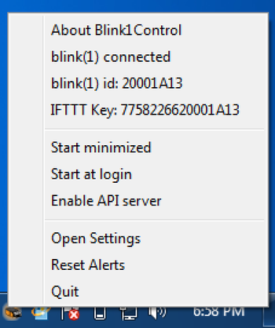

Blink1Control Help
Blink1Control is the primary user-level application for controlling blink(1).
It is an event-based system, where events on your computer or on
the Net (via IFTTT!) can trigger color patterns on the blink(1).
Help Topics:
- QuickStart: Connecting IFTTT to your blink(1)
- Application Layout
- Tray / Menu Icon functions
QuickStart: Connecting IFTTT to your blink(1)
IFTTT is an Internet-based service that connects other Net-based systems together.
IFTTT communicates with Blink1Control via "Rule names": IFTTT sends an event with
a given rule name and Blink1Control looks for events with matching rule names.
If the rule names match, Blink1Control will play the color pattern you've chosen.
On the IFTTT site, the rule name is specified in the blink(1) action of your recipe.
The general steps to hook IFTTT to Blink1Control are:
- Get IFTTT Key from Blink1Control
- Activate the blink(1) channel on IFTTT
- Create an IFTTT recipe
- Configure Blink1Control to watch for recipe
1. Get IFTTT Key from Blink1Control
On the left side of Blink1Control is the "Device" area with the "IFTTT key".
The IFTTT key is 16 hexadecimal characters.
Double-click the IFTTT key and press Ctrl-C / Cmd-C to copy it to your clipboard.
This number is what IFTTT uses to uniquely identify your blink(1).
2. Activate blink(1) Channel on IFTTT
Visit IFTTT.com and create an account for free.
Click on "Channels" then the "blink(1)" channel.
Click the Activate button and type in the IFTTT key from Blink1Control.
Click Activate once more and your blink(1) channel is now set up.
3. Create an IFTTT Recipe
To test everything out, let's create a really simple recipe where IFTTT listens for email from you
and then sends an event to your blink(1).
Go to "My Recipes" on IFTTT and click "Create a Recipe".
Pick the "Email" trigger (the "this") and then "blink(1)" action (the "that").
For the blink(1) action, there's a single field called "Rule name". This is the important bit.
Make up a rule name that's short and indicates what this recipe is about. In this example, it's "my_first_rule".
This is what you will also type in Blink1Control later.

Click on "Create Action" and then "Create Recipe" and you are done on the IFTTT site.
4. Configure Blink1Control to watch for recipe
Back in Blink1Control, click on the "IFTTT" tab and then the "+" button to add a new blank IFTTT rule.
Once you add a rule, the Recent Events area on the left will show any newly received IFTTT events.
(You might see a "Channel Activated" event from IFTTT. This indicates that Blink1Control has succesfully talked with IFTTT)
Double-click on the rule name, type in the rule name you used on IFTTT ("my_rule_name" in this case) and press Enter .
And pick a color pattern you like to play on the blink(1) when the recipe fires.
Now send a mail to "trigger@ifttt.com" from the email address IFTTT is expecting and your blink(1) will blink!
You will also see the event in the Recent Events list.
You can create more recipes using IFTTT. But be aware, as IFTTT says on their About page:
"Most Personal Recipes check for new Trigger data every 15 minutes, some are even faster."
Application Layout
The Blink1Control application has two status areas on the left, a color picker and color pattern chooser on the bottom,
and a set of control pages under tabs on the right.
The parts of the main Blink1Control page:
A. Virtual blink(1) -- Reflects what's going on the real blink(1) device
B. Serial number and IFTTT key -- Useful when setting up IFTTT
C. Recent events list -- Any of the event monitors log their activity here
D. Fixed BigButtons -- Common tasks and fun toys for immediate playing with blink(1)
E. Customizable BigButtons -- Assign these to your own colors or patterns, right-click to configure them.
F. Color Picker -- Pick the colors, fade times, and which LED you want to control.
G. Color pattern list -- Blink1Control comes with some stock patterns, but you can make your own.
System Tray / Menubar Icon
Blink1Control is designed to be minimized, so it presents a System Tray (Windows) / Menu bar (Mac) icon.
Clicking on the icon (right-clicking on Windows) gives a menu of startup options and info.

These options are:
- "Start minimized" -- on next startup, don't show the main window
- "Start at login" -- auto-run Blink1Control next time this user logs in
- "Enable API Server" -- enable the HTTP REST API server to control blink(1)
- "Open Settings" -- opens the main window
- "Reset Alerts" -- cancels any currently playing color patterns and makes the blink(1) go dark
20140715